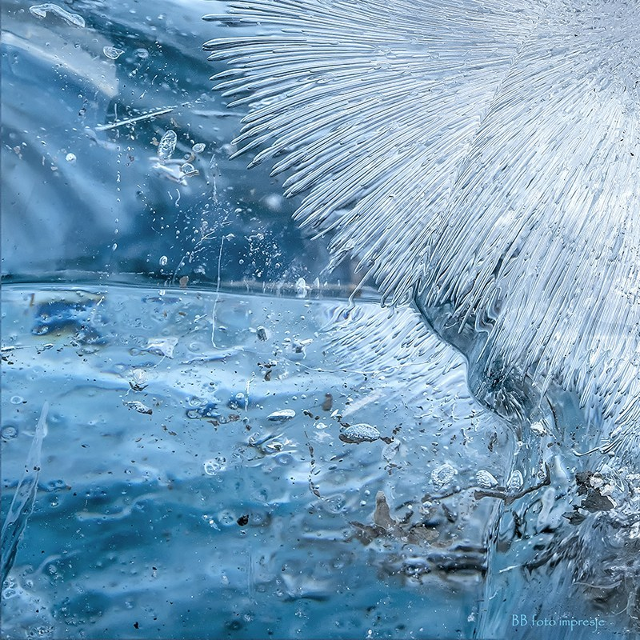

Take a Deeper Look
When's the last time you thought about climate change? These resources are sure to teach and inspire you.
Bill Nye
The science guy is back, covering more serious topics. This video is short and to the point, full of informative and easy to follow graphics.
Kurzgesagt - In a Nutshell
The colorful animation will appease your eyes as he covers complex topics. This channel is home to some of the highest quality videos on all of YouTube, so you won't be disappointed.
artistsandclimatechange.com
With so many numbers and graphs, it can be good to take a step back and instead appreciate art. I especially enjoy the photography section of the blog, as it helps make a connection with the environment.
